왜 SDLC를 다시 봐야 할까요
SDLC(Software Development Life Cycle)는 소프트웨어를 만드는 일을 계획, 설계, 빌드, 테스트, 배포, 유지보수 여섯 단계로 나눈 순환이에요. 유지보수가 끝나면 다음 기능이나 버그를 들고 다시 계획으로 돌아와요. 영상은 Anthropic이 Claude Academy에 올린 14개 레슨짜리 플레이북을 따라가며, 이 순환을 Claude Code로 어떻게 돌리는지 보여 줘요.
아래 슬라이드 왼쪽은 전통적인 방식이에요. 여섯 단계가 한 줄로 내려가는 느린 직선이에요. 오른쪽은 AI(Artificial Intelligence) 네이티브 방식으로, 가운데 Claude를 두고 여섯 단계가 원을 그려요. 밑줄 문구는 '몇 주가 아니라 몇 시간' 단위로 돈다는 뜻이에요.
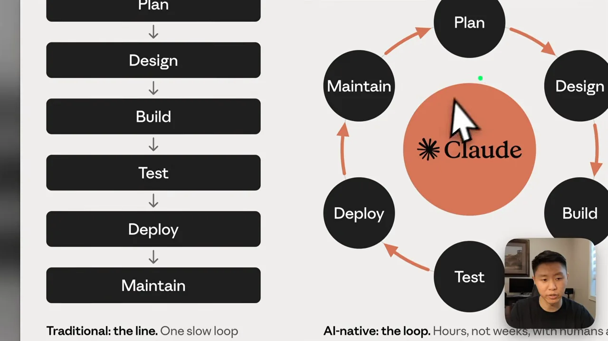
빌드가 줄면 병목은 앞뒤로 옮겨 가요
다음 그림 위쪽 줄은 에이전트 이전이에요. 모든 단계가 사람 속도로 움직이고, 주황색 Build 칸이 가장 길어요. 아래쪽 줄에서는 Build가 얇은 막대로 줄고, 오른쪽에 'cycle time reclaimed'라는 빈칸이 생겨요. Plan·Design 밑의 requirements, Test 밑의 review, Deploy 밑의 release가 이제 더 공을 들여야 할 곳이에요.
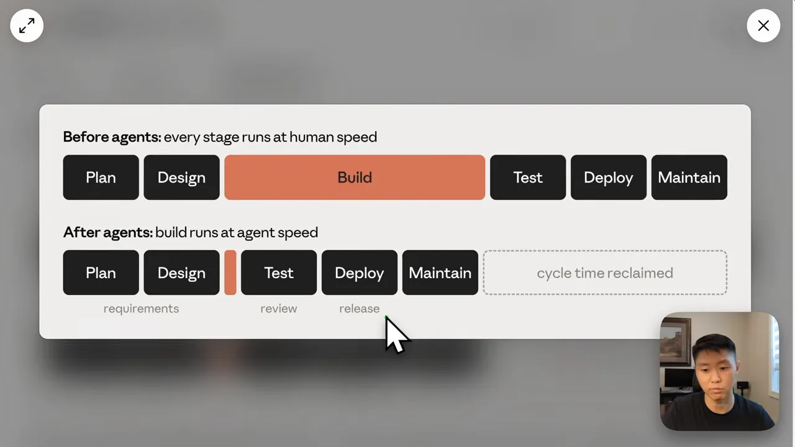
플레이북의 첫 레슨은 단계마다 무엇이 바뀌는지 표로 정리해요. Plan 줄을 보면, 예전에는 위원회가 워크숍과 승인을 거쳐 손으로 요구사항을 썼어요. 이제는 Claude가 출처에서 바로 불편한 점을 모아 intent.md에 담아요. Design은 에이전트와 한 번의 작업 세션으로 압축되고, Build에서는 조직의 지식을 CLAUDE.md와 스킬로 버전 관리해요.
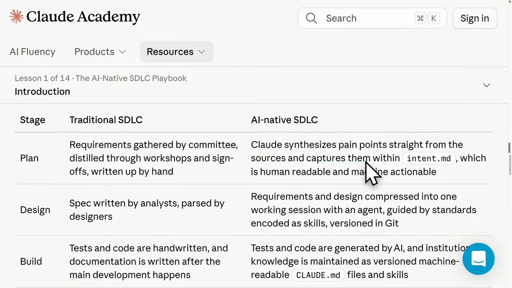
계획: 인터뷰하고 intent.md로 남기기
예전 계획 단계는 이해관계자, 고객, 프로젝트 매니저와 이야기하며 요구사항을 손으로 모으는 일이었어요. 이제는 에이전트가 사람에게 질문을 던지며 요구사항을 모아요. 영상이 보여 주는 건 Matt Pocock의 grill-me 스킬이에요. 설명 첫 줄이 '계획과 설계를 체계적인 질문으로 몰아붙이는 인터뷰 스킬'이에요.
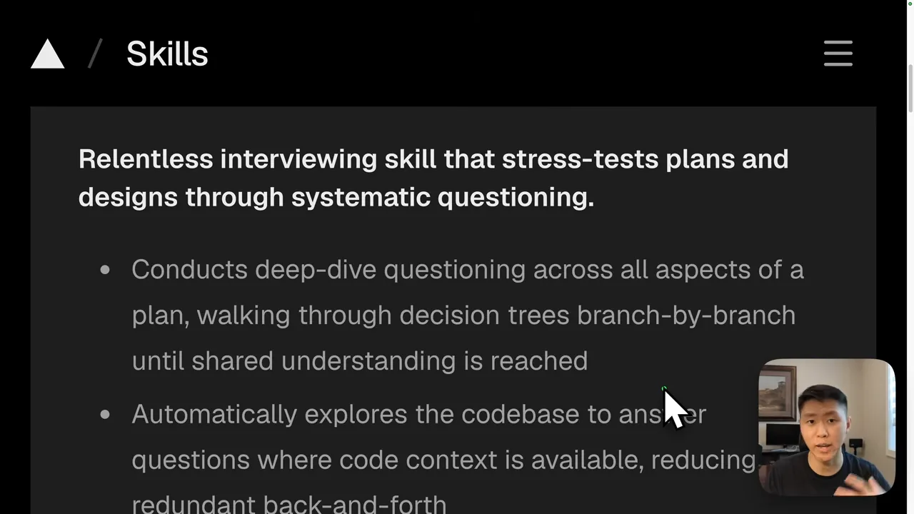
intent.md는 변경마다 하나씩
인터뷰가 끝나면 대화, 결정, 맥락을 intent.md 한 파일로 남겨요. 사람이 읽을 수 있고 기계가 바로 실행할 수 있는 형식이에요. 발표자가 먼저 짚는 건 개수예요. 아래 그림 왼쪽처럼 my-project 폴더에 하나만 두는 게 아니라, 오른쪽처럼 intent/ 폴더 안에 dark-mode.md, claims-status.md, login-bug.md, 5xx-alert.md를 변경마다 하나씩 둬요.
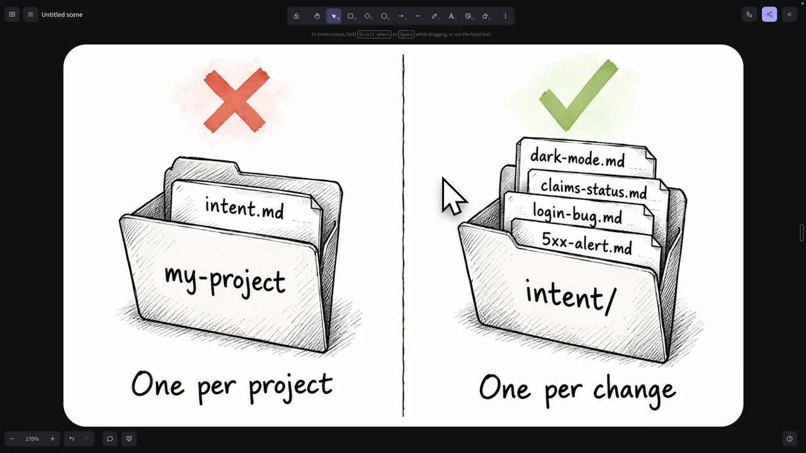
두 번째는 위치예요. 꼭 저장소 안에 둘 필요는 없어요. Jira, GitHub Projects, Linear 같은 티켓 시스템을 진실의 원천으로 삼아도 돼요. 그림 아래 문구 'Pick one. Not both.'가 핵심이에요. 저장소와 트래커 양쪽에 두면 어느 쪽이 맞는지 헷갈리게 돼요.
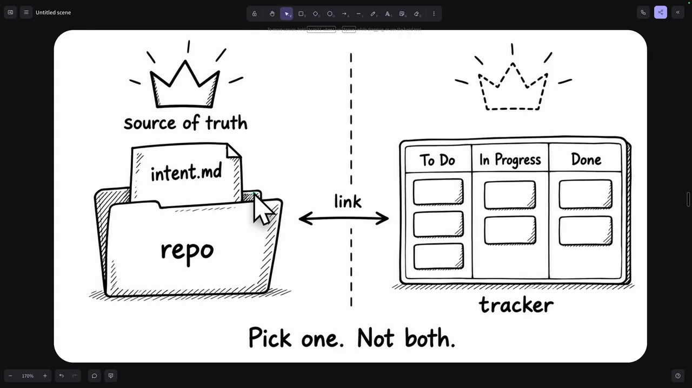
템플릿과 작성 프롬프트
플레이북이 보여 주는 intent.md 예시는 보험금 청구 상태를 고객이 직접 조회하게 하는 변경이에요. 맨 위에 제목과 작성자·상태(draft)가 있고, 그 아래 다섯 절이 이어져요.
| 절 | 예시에 적힌 내용 |
|---|---|
| Problem | 고객이 청구 진행 상황을 물으려 콜센터에 전화하고, 상담 시간의 약 3분의 1이 상태 문의에 쓰여요 |
| Proposed outcome | 고객이 포털에서 청구 상태, 다음 단계, 예상 날짜를 봐요 |
| Affected users and systems | 청구 담당자, 포털 팀, claims-core API(Application Programming Interface) |
| Constraints | 포털 세션에 새 개인정보(PII(Personally Identifiable Information))를 넣지 않고, 기존 인증만 써요 |
| Open questions | 외부 손해사정인도 접근해야 하나요? |
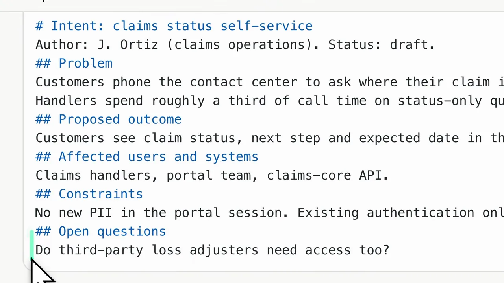
발표자는 이 템플릿을 그대로 쓰게 하는 프롬프트를 따로 만들어 보여 줘요. 그릴링 세션이 끝난 뒤 붙여 넣는 'Step 3' 프롬프트예요. 파일 경로(intent/날짜-이름/intent.md), 첫 두 줄 형식, 바꿀 수 없는 다섯 절 순서를 정하고, 마지막 문장이 중요해요.
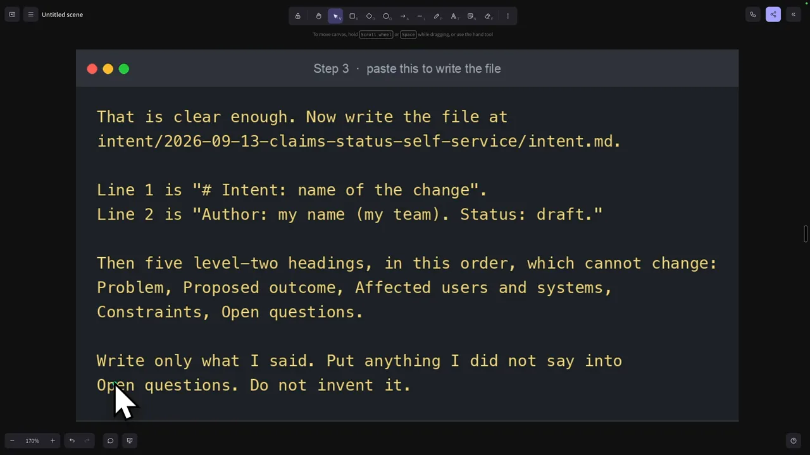
Write only what I said. Put anything I did not say into Open questions. Do not invent it.
내가 말한 것만 써. 내가 말하지 않은 건 Open questions에 넣고, 지어내지 마.
— 영상 화면 04:04 (발표자가 만든 프롬프트)
이 프롬프트를 매번 붙여 넣는 대신 스킬이나 커맨드로 만들어 그릴링 세션 끝에 부르는 방법도 있어요.
설계와 계획: spec.md, plan.md
intent.md가 생기면 단계 사이를 잇는 산출물 사슬이 시작돼요. 설계 단계는 intent.md를 받아 spec.md로 바꿔요. 둘의 차이는 한 줄로 정리돼요. intent.md는 왜 하는지를, spec.md는 정확히 무엇을 만드는지, 곧 기술 요구사항과 기대 동작을 정해요.
플레이북은 이 변환에 쓸 프롬프트를 줘요. 빨간 테두리 안을 보면, 첨부한 intent.md를 읽고 기존 코드베이스에 맞는 요구사항·설계 스펙을 쓰되, 사용 가능한 스킬을 적용해 브랜드 가이드, 보안 정책, UX(User Experience) 기준을 따르게 해요. 서로 부딪혀서 동시에 만족할 수 없는 정책은 우려 사항으로 분명히 적으라고 해요.
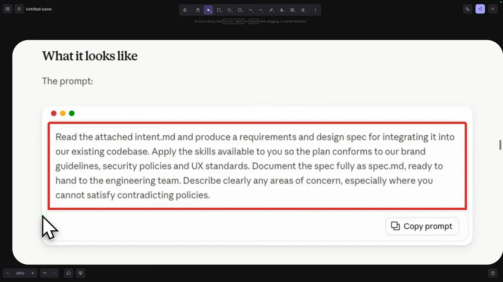
발표자는 이 프롬프트를 꼭 따를 필요는 없다고 해요. Matt Pocock 스킬이나 Superpowers 스킬처럼 이미 쓰는 도구, 조직이 정한 템플릿으로 intent를 spec으로 바꿔도 돼요.
plan.md: 에이전트가 따라갈 작업 목록
빌드 직전에는 intent와 spec을 합쳐 plan.md를 만들어요. 에이전트가 하나씩, 또는 병렬로 처리할 수 있는 작업 목록이에요. 레슨 4 'Claude Code plan mode as the default starting point'의 예시는 위와 같은 청구 상태 변경이에요. 바뀌는 파일 목록(StatusPanel.tsx, routes/status.py 등)과 작업 순서 세 줄이 보여요.
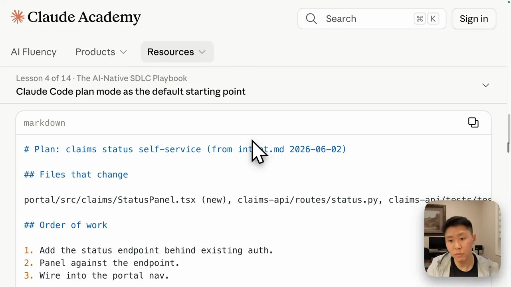
| plan.md 절 | 담는 것 | 예시 |
|---|---|---|
| Files that change | 어느 파일을 바꾸는지 | portal/src/claims/StatusPanel.tsx (새 파일) 등 |
| Order of work | 무엇을 먼저 하는지 | 엔드포인트 → 패널 → 메뉴 연결 |
| Risks | 고려할 위험 | claims-core API가 초당 50건으로 제한돼 있어 패널이 캐시해야 해요 |
| Proof | 끝났음을 보이는 증거 | test_status가 네 가지 청구 상태를 다루고, 스크린샷이 승인된 시안과 맞아요 |
여기서도 정답은 하나가 아니에요. 발표자는 Matt Pocock의 to-tickets나 Superpowers의 writing-plans를 예로 들어요. 아래 writing-plans 템플릿은 목표(Goal), 아키텍처, 기술 스택, 스펙 위치, 전체 제약(Global Constraints)으로 시작하고, 작업마다 파일, 인터페이스, 체크박스 단계를 달아요.
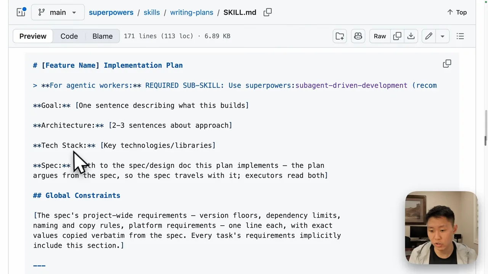
발표자의 태도는 일관돼요. 지금 잘 돌아가는 흐름이 있으면 그걸 쓰고, 이 플레이북은 보탤 곳을 찾는 참고로 쓰라는 거예요. 지금까지의 진행은 'Who owns each step' 그림에 모여요. Plan 옆에 intent.md, Design 옆에 spec.md, Build 옆에 plan.md가 채워졌고, 아래 세 칸은 아직 검게 가려져 있어요.
테스트: 스스로 확인하는 피드백 루프
구현에 들어가기 전에 테스트부터 써요. 플레이북이 권하는 방식이 테스트 주도 개발이에요. 코드를 쓰기 전에 확인 장치를 먼저 만들고, 테스트가 실패하는 동안 에이전트가 코드를 고치게 해서 통과할 때까지 돌려요. 에이전트 곁에 피드백 루프를 하나 붙여 주는 셈이에요.
아래 그림이 그 루프예요. 가운데 에이전트가 Write code에서 시작해 Run the checks로 가요. 오른쪽 괄호에 검사 셋, tests·lint·build가 적혀 있어요. Pass?에서 'NO'면 Fix it을 거쳐 다시 코드를 쓰고, 'YES'면 Commit + push로 내려가요.
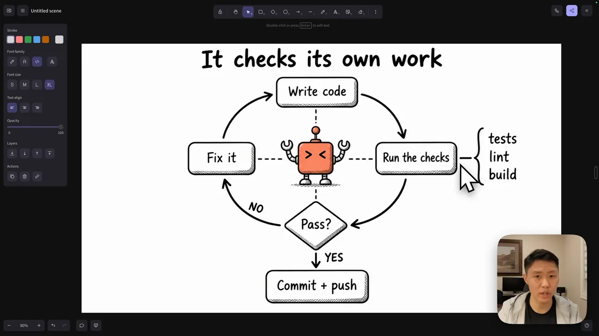
레슨 8 'Give Claude a feedback loop'의 강조 문장도 같은 말이에요. 노란 칸 안을 보면, 테스트든 빌드든 스크린샷 비교든 Claude가 자기 작업을 확인할 방법을 항상 주라고 해요. 그러면 세션이 엔지니어가 보기 전에 스스로 실수를 고쳐요.
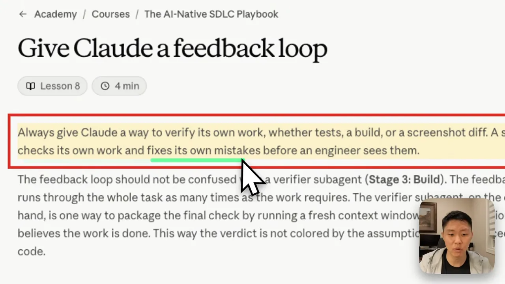
Always give Claude a way to verify its own work, whether tests, a build, or a screenshot diff.
테스트든 빌드든 스크린샷 비교든, Claude가 자기 작업을 확인할 방법을 항상 주세요.
— 영상 화면 09:19 부근 (레슨 8)
CLAUDE.md에 '초록'의 뜻을 적어요
발표자는 Matt Pocock의 tdd 스킬과 Superpowers의 test-driven-development 스킬도 비슷한 일을 한다고 짚은 뒤, 플레이북 버전을 보여 줘요. CLAUDE.md의 'Verifying your work' 절에 명령 셋과 각각의 성공 출력을 적어 둬요. make test는 '0 failed'로, make lint는 출력 없이, make build는 'Build succeeded'로 끝나야 해요.
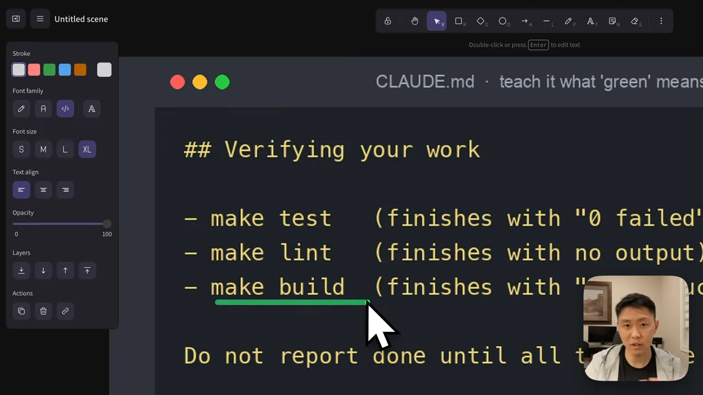
화면을 아래로 내리면 '괄호 쪽이 중요한 절반'이라는 메모가 있어요. 기대 출력 없는 명령은 에이전트가 통과 기준을 마음대로 정하게 둔다는 뜻이에요. 여기서 build는 코드를 쓰는 일이 아니라 실제로 컴파일되는지, 프로그램이 돌아가는지 보는 확인이에요. 그리고 마지막 줄 'Do not report done until all three are green'이 루프를 닫아요.
테스트 도구는 세 층으로
발표자는 테스트 도구를 직접 세 층으로 나눠 화면에 적어요. 함수 단위는 Jest/Vitest, UI(User Interface) 컴포넌트는 React Testing Library, 페이지 전체 흐름은 Cypress/Playwright예요.
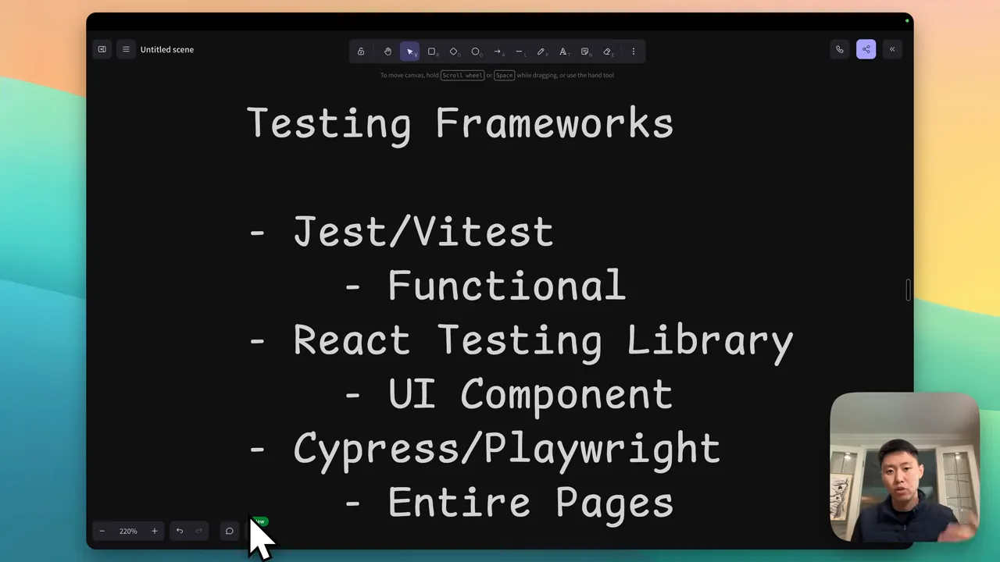
화면에는 목록만 있지만, 발표자는 층 사이의 관계를 말로 설명해요. 컴포넌트 하나는 여러 함수를 부르지만, 함수는 UI 컴포넌트를 부르지 않아요. 그래서 맨 아래 함수 테스트를 먼저 다 덮고, 그 위에 컴포넌트 테스트, 마지막으로 사용자 흐름 전체를 흉내 내는 엔드투엔드 테스트를 쌓아요.
모델을 바꿔도 안전하게: 지속적인 eval
테스트를 갖췄으면 다음은 CI 안에서 도는 지속적인 eval이에요. 이유는 모델 교체예요. 새 모델로 바꾸면 예전 모델이 잘하던 걸 놓칠 수 있어요. 지금 무엇이 잘 되는지 알아 둬야 바꾼 뒤 나빠진 걸 잡을 수 있어요.
아래 그림 왼쪽 서랍에 '20 to 50 real tasks'가 들어 있어요. add a status endpoint, fix the tenant cache key, rename a config flag처럼 이미 풀었던 작업이에요. 모델을 바꾸거나 규칙을 바꾼 뒤 같은 작업을 다시 돌리면, 오른쪽처럼 20개 중 18개 통과(90%)라는 결과와 함께 어느 작업이 나빠졌는지(X 표시) 보여요.
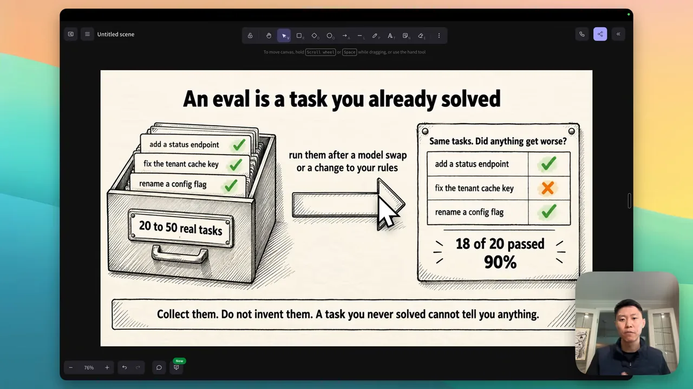
재료는 PR(Pull Request)이나 GitHub 이슈처럼 이미 기록이 남은 작업이에요. 발표자는 에이전트에게 이걸 읽혀 skill-creator 같은 스킬로 eval을 만들라고 권해요. 레슨 9 'How to execute it'은 순서를 다섯 줄로 정리해요.
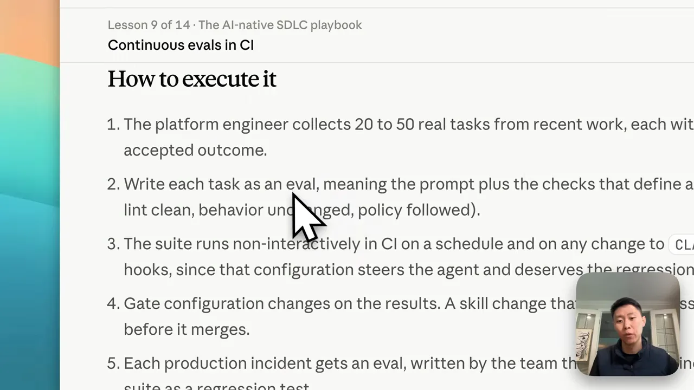
- 플랫폼 엔지니어가 최근 작업 20~50개를 모아요 — 각각 받아들여진 결과와 함께요.
- 작업마다 eval을 써요 — 프롬프트와, 통과를 정하는 검사(테스트 통과, 린트 깨끗, 동작 그대로, 정책 준수)예요.
- CI에서 비대화형으로 돌려요 — 정해진 일정마다, 그리고
CLAUDE.md·스킬·훅이 바뀔 때마다요. 이 설정이 에이전트를 움직이니 회귀 테스트가 필요해요. - 설정 변경을 결과로 막아요 — 통과율을 떨어뜨리는 스킬 변경은 머지 전에 검토해요.
- 운영 장애마다 eval을 하나씩 더해요 — 장애를 맡았던 팀이 쓰고, 회귀 테스트로 남겨요.
GitHub 워크플로로 돌리기
플레이북은 .github/workflows/agent-evals.yml 예시도 줘요. CLAUDE.md나 .claude/ 아래가 바뀐 PR에서, 그리고 매일 한 번(cron '0 2 * * *', UTC(Coordinated Universal Time) 기준 새벽 2시) 돌아요. 아래 화면의 run 부분이 핵심이에요. evals 폴더의 JSON(JavaScript Object Notation)을 하나씩 돌며 claude -p로 프롬프트를 헤드리스로 실행하고, 쓸 수 있는 도구를 Read, Edit, Bash(make test)로 묶은 뒤, check.sh로 결과를 검사해요.
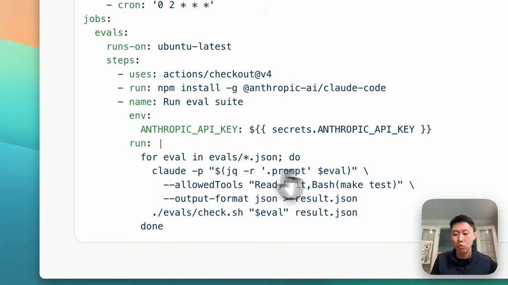
모델을 바꾸든 규칙을 바꾸든, 이 워크플로가 '스킬이 여전히 제대로 도는지'를 매번 확인해 줘요.
PR 리뷰와 훅
eval까지 갖추면 다음은 PR 리뷰예요. 발표자가 이 레슨에서 건진 요점은 하나예요. 리뷰 기준을 REVIEW.md 한 파일에 적어 두고 Claude가 그걸 따르게 하는 거예요. 레슨 10 'AI in the PR review loop'의 예시를 보면 세 부분으로 나뉘어요.
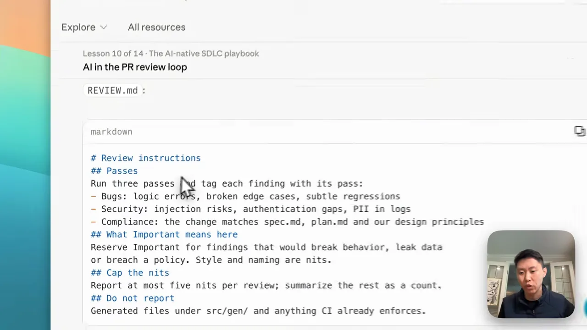
REVIEW.md 절 | 예시 내용 |
|---|---|
| Passes | 리뷰를 세 번 돌고 찾은 것마다 태그를 붙여요. Bugs(논리 오류, 경계 조건, 회귀), Security(인젝션, 인증 빈틈, 로그 속 개인정보), Compliance(spec.md, plan.md, 디자인 원칙과 맞는지) |
| What Important means here | 동작을 깨거나 데이터를 흘리거나 정책을 어기는 것에만 Important를 붙여요. 스타일과 이름은 nit이에요 |
| Cap the nits | nit은 리뷰당 다섯 개까지, 나머지는 개수만 적어요 |
| Do not report | src/gen/ 아래 생성 파일, CI가 이미 강제하는 것 |
영상에서는 'pass the three tests'처럼 들리지만, 화면의 문구는 세 번의 리뷰 패스(Run three passes)예요. 이 REVIEW.md는 테크 리드 같은 사람이 써요. 발표자는 여기에 한 가지를 더 권해요. 사람이 코멘트를 남겼던 지난 PR을 에이전트에게 읽혀, 반복되는 지적을 찾아 REVIEW.md에 보태는 거예요. 그러면 다음 PR부터 그 기준으로 태그를 달아요.
훅으로 위험한 행동 막기
리뷰만으로는 부족해서 훅을 더해요. 에이전트가 운영 데이터베이스를 건드리거나 PR을 머지하려는 순간처럼, 특정 행동을 실행 전에 막는 장치예요. 아래 그림 왼쪽에 훅 예시 넷이 걸려 있어요. update plan, block file edit, run linter, block credentials예요. 가운데 에이전트는 벽에 막혀 production으로 넘어가지 못하고, 벽에 'blocked: exit 2'와 '승인받는 방법' 안내가 붙어 있어요.
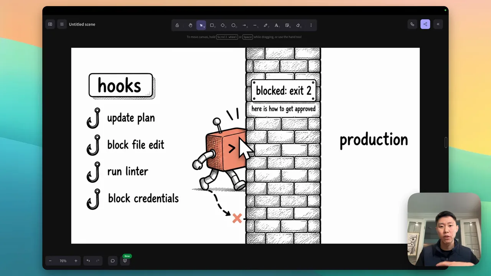
발표자가 드는 상황은 이래요. 리뷰어 에이전트가 빌더 에이전트에게 코멘트를 보내 고치게 할 때, 훅이 린터를 돌려 형식을 맞추고 테스트 통과를 확인해요. 자격 증명을 코드에 쓰려 하면 막고, 손대면 안 되는 파일은 수정 자체를 막아요. 버그나 민감한 데이터가 운영에 올라가지 않게 하는 가드레일이에요.
배포와 유지보수: 지표로 루프 닫기
PR이 리뷰를 거쳐 머지되면 남은 건 배포예요. 발표자는 배포를 전과 후로 나눠 설명하고, 화면에는 그 내용을 정리한 목록을 띄워요.
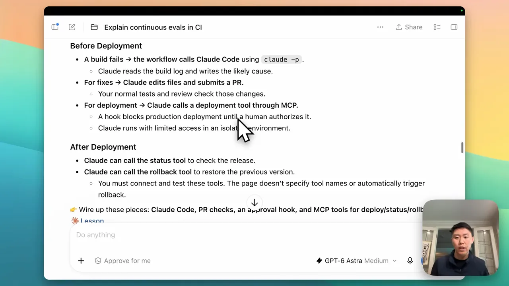
| 시점 | 무슨 일이 생기면 | Claude가 하는 일 |
|---|---|---|
| 배포 전 | 빌드가 실패해요 | 워크플로가 claude -p로 Claude를 불러 빌드 로그를 읽고 원인을 찾아요 |
| 배포 전 | 고칠 게 생겨요 | 파일을 고쳐 PR을 올리고, 평소의 테스트와 리뷰를 그대로 거쳐요 |
| 배포 전 | 배포할 차례예요 | MCP(Model Context Protocol)로 배포 도구를 불러요. 사람이 승인할 때까지 훅이 운영 배포를 막고, Claude는 격리된 환경에서 제한된 권한으로 돌아요 |
| 배포 후 | 릴리스를 확인해요 | 상태 도구(Datadog, Sentry 같은 모니터링)로 문제가 없는지 봐요 |
| 배포 후 | 무언가 크게 깨졌어요 | 롤백 도구로 이전 버전으로 되돌리고, 원인을 찾아 PR부터 다시 밟아요 |
화면 목록에는 '도구는 직접 연결하고 시험해 둬야 한다'는 단서도 있어요. 플레이북은 특정 도구 이름을 정해 주지 않고, 롤백을 자동으로 일으키지도 않아요.
지표로 루프를 닫아요
마지막 단계는 유지보수예요. 플레이북의 마지막 레슨 'Closing the loop on metrics'는 지표를 주기적으로 읽어 개선할 곳을 찾게 해요. 예시 bands.yaml을 보면 감시하는 지표는 CI 테스트 실패율(ci_test_failure_rate)이고, 기준선은 지난 30일 이동값(rolling_30d)이에요.
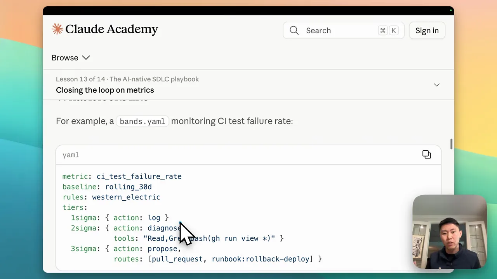
기준선에서 벗어난 정도는 시그마 단위로 재요. tiers 아래를 보면 1시그마 벗어나면 기록(log)만 해요. 2시그마면 진단(diagnose)하는데, 이때 쓸 수 있는 도구는 Read, Grep, 그리고 gh run view 같은 읽기 명령이에요. 3시그마면 PR이나 rollback-deploy 런북을 제안(propose)해요.
발표자가 드는 예는 계속 반복되는 에러, 점점 느려지는 데이터 쿼리, 앱을 떠나는 사용자예요. 무엇이든 문제가 보이면 Claude가 새 intent.md를 만들고, 그 파일을 들고 계획 단계부터 같은 과정을 다시 돌아요. 아래 그림은 영상이 단계마다 남긴 파일과 장치를 한 바퀴로 모은 거예요.